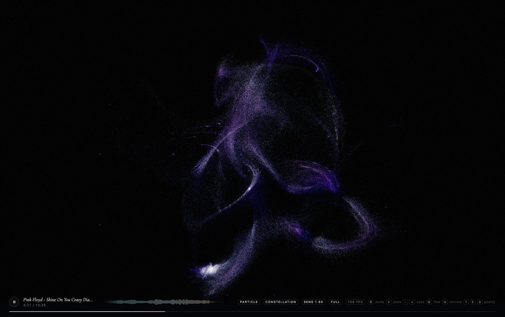
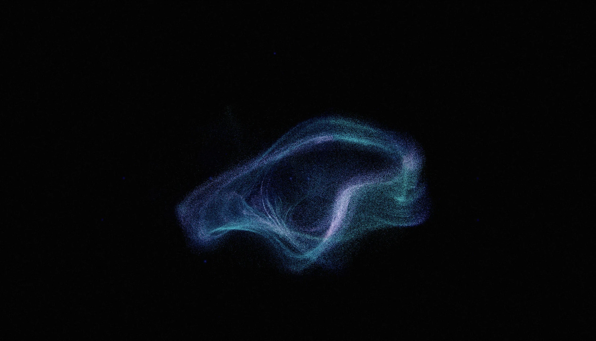

Constraint
Frequency alone cannot tell a voice from a piano; the field also needs to respond to key, tempo, transients, stereo placement and quiet.
CASE / Audio / WebGPU
A music visualiser that works out what the music is doing, not just how loud it is.

HOW IT HOLDS UP
The audio analysis, WebGPU compute renderer and interaction model.
Frequency alone cannot tell a voice from a piano; the field also needs to respond to key, tempo, transients, stereo placement and quiet.
Combine chroma, autocorrelated spectral flux, per-band attack and centre-versus-sides analysis, then drive velocity-stretched particles in a compute shader.
Live, including in a phone browser. Measured GPU time at 1800×3043: 620k particles in 8.07ms; 1.2M in 11.85ms.
SELECTED PROOF
RECORDED STATES




KEEP READING